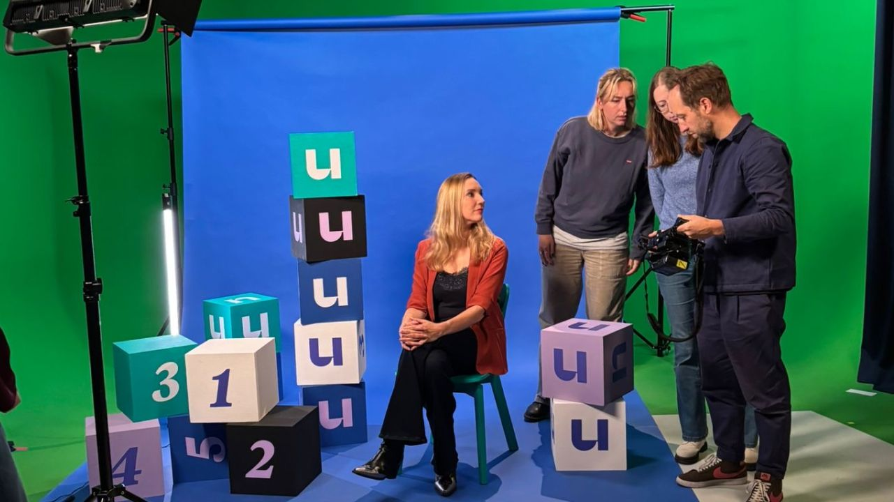
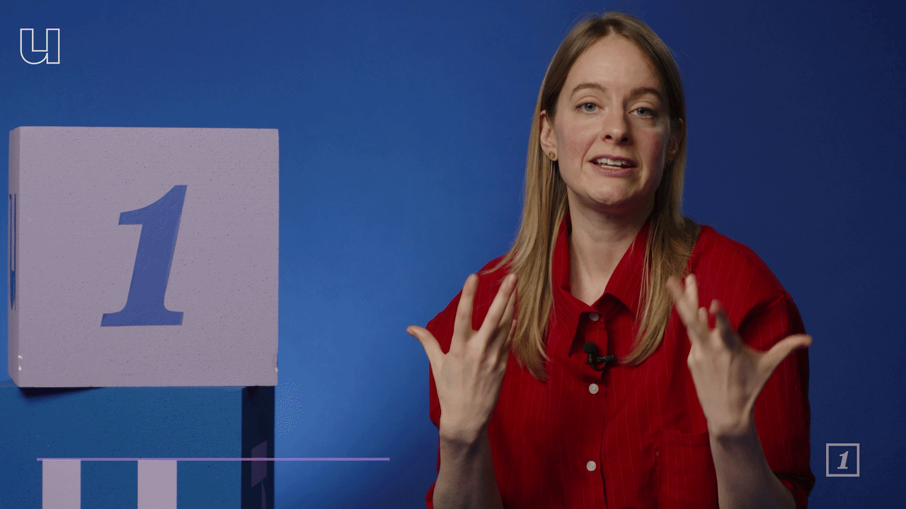
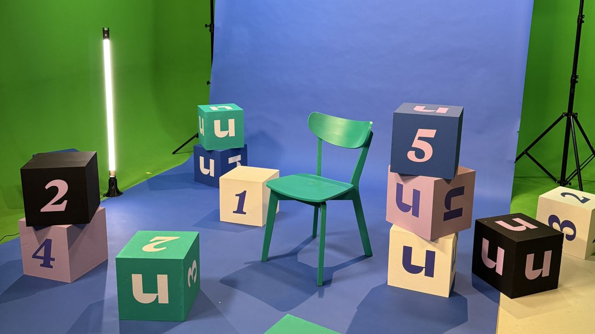

Hoe maak je van één goed idee een herkenbaar format?
Voor de Universiteit van Nederland ontwikkelden we samen met de redactie HEY U!: een format waarin kijkers zelf hun vragen insturen en wetenschappers daar in korte video’s antwoord op geven.
We dachten vanaf het begin mee over hoe dat idee als format moest werken. Niet alleen over de graphics achteraf, maar over het geheel: set, kleur, camerahoeken, typografie, animatie en de manier waarop al die onderdelen samen één herkenbare wereld vormen.

Omdat we de visuele identiteit van de Universiteit van Nederland al jaren beheren, weten we precies waar de ruimte binnen het merk zit. HEY U! mocht duidelijk iets nieuws zijn, zonder ineens als een ander merk te voelen.

Daarom vertaalden we bestaande merkprincipes naar een eigen beeldtaal voor het format. Van de opbouw van de set tot hoe een vraag in beeld verschijnt en hoe animatie het antwoord ondersteunt.

Het resultaat is een format met genoeg vaste visuele regels om iedere aflevering herkenbaar te maken, maar genoeg vrijheid om twaalf verschillende onderwerpen niet twaalf keer hetzelfde te laten voelen.
Nieuw format.
Vertrouwd merk.